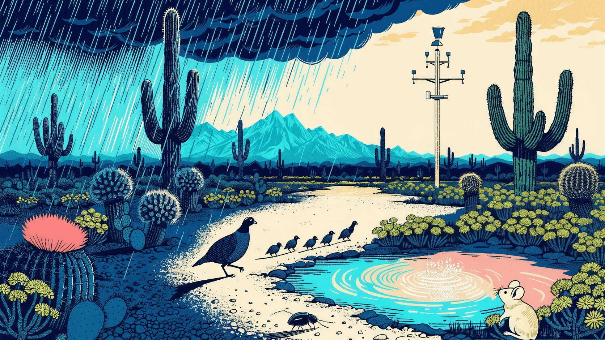

Driver Cascade · NEON Response Atlas · unofficial
Who moves with the weather?
One shared calendar lines up NEON’s weather with nine living records — co-displayed to explore, never a tested chain.
Launch the Response AtlasThe hosted app may need a moment to start after you activate Launch.

The NEON Explorer Suite
Nine explorers, one sky.
Each companion reads a different living record from the same NEON field sites. This atlas is where their calendars meet the weather.
- Small Mammals Who moves after dark?
- Birds Who’s singing where?
- Ground Beetles What moves at ground level?
- Plant Diversity How much can one square hold?
- Plant Phenology Read the seasons.
- Veg Structure Tagged. Measured. Still changing.
- Water Chemistry Explore NEON water chemistry.
- Mosquitoes What rises after rain?
- Little Inverts What lives below the surface?
What this shows you
Weather and biological responses, aligned—not assumed to form a chain.
Four measurement layers share an annual calendar. The atlas evaluates only explicitly eligible direct pairings; visual order does not establish a mechanism, mediation, or trophic transfer, and the atlas does not estimate mediation or causation.
Weather summaries ·
complete-window rain and temperature
Green-up timing index ·
left-censor-screened and composition-adjusted
Plant observations ·
richness, cover, and fruiting records
Animal observations ·
within-site detection or catch indices
9
companion explorers
46
NEON sites
open
public NEON data
4
layers aligned